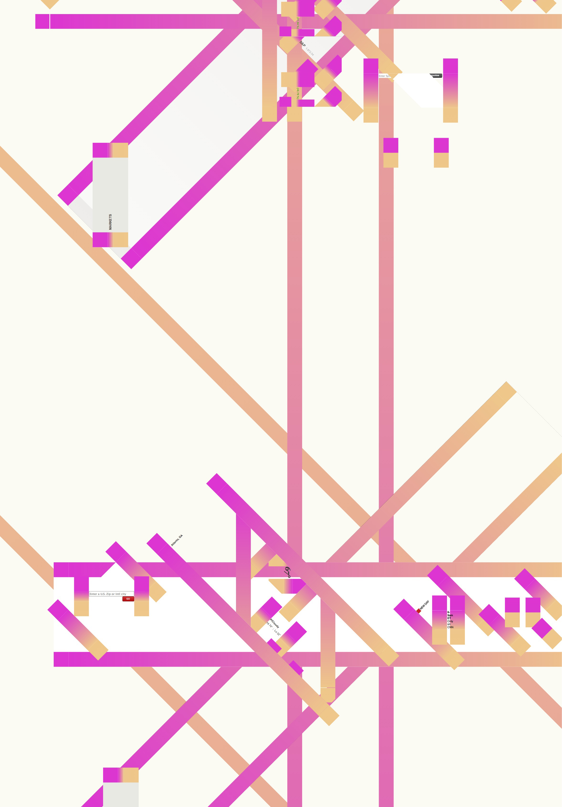
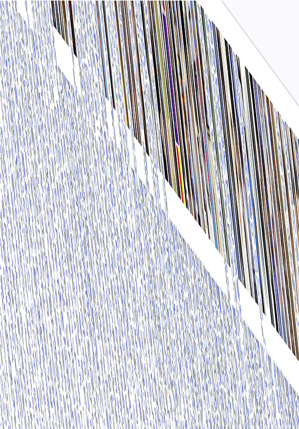
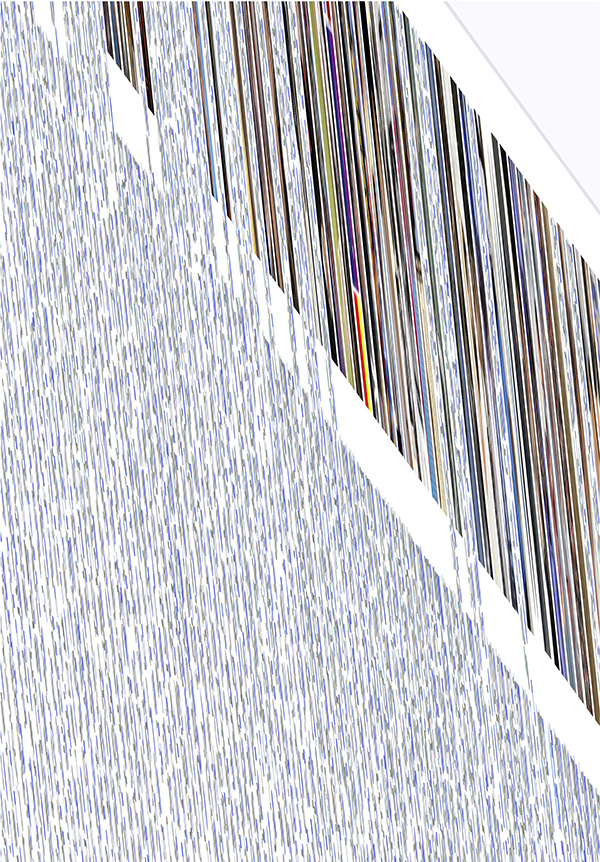

The nature of cascading style sheets makes the visual form of a website extremely tenuous. One small CSS change can render a well known website unrecognizable, thereby creating new visual form and revealing the underlying structure of the site. Our explorations insert a few lines of CSS into common websites like Google, Facebook, & Yahoo via a manipulated, open-source Chrome extension called “textfreestyles”. Using a default A2 size page as a frame or cropping tool, we selected interesting compositions for printed output.
 
